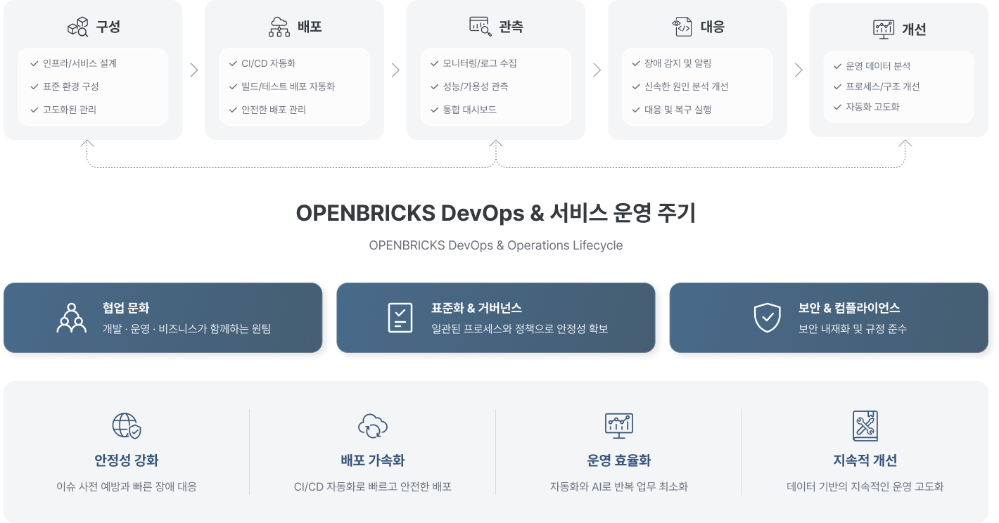
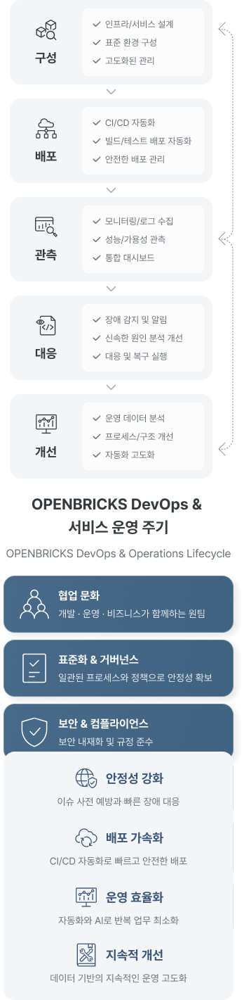
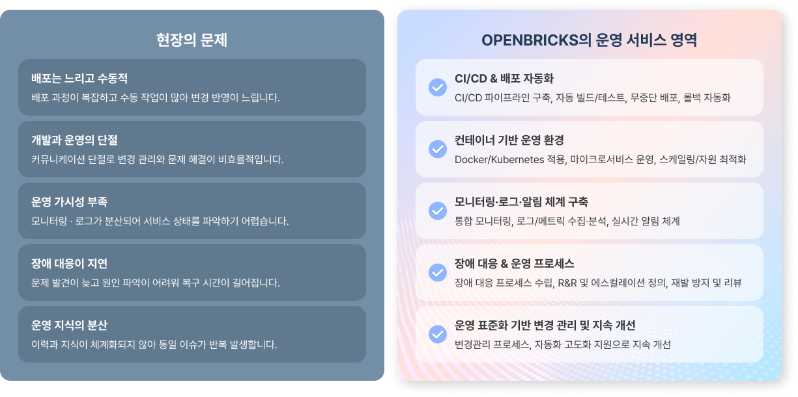
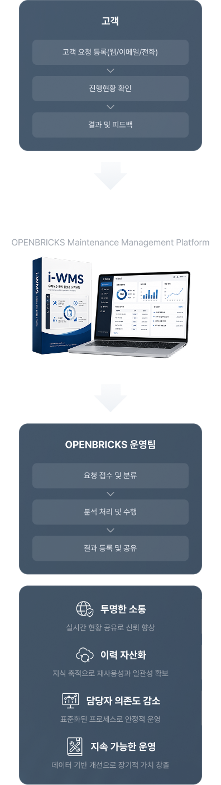
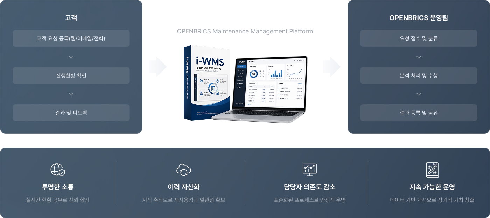
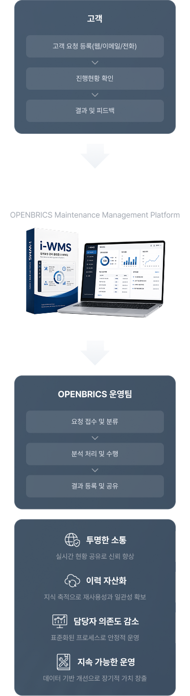
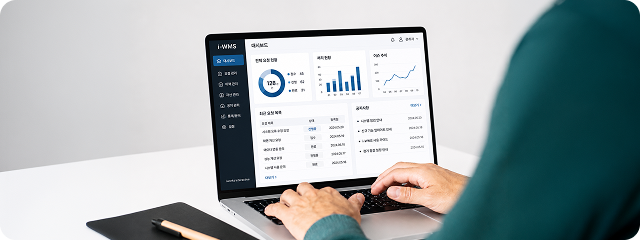

DevOps & Operations
빠른 배포와 안정적인 운영을
함께 구현하는 실행형 운영 서비스
OPENBRICKS의 DevOps & Operations는 단순 유지보수가 아닌,
배포 자동화·운영 표준화·모니터링·장애 대응까지 하나의 체계로 연결하는 운영 서비스입니다.
DevOps 및 서비스 운영
자동화 · 표준화 · 관측성 · 대응 · 지속개선을 통해 안정적이고 지속 가능한 서비스 운영을 실현합니다.


OPENBRICKS의 운영 서비스 체계
서비스와 운영 환경을 표준화하고, 배포 자동화를 통해 변경사항을 안정적으로 반영합니다. 또한 모니터링·로그·알림 기반 운영 체계와 지속적인 개선 프로세스를 구축합니다.
구성
서비스와 운영 환경을
표준화된 방식으로 구성
배포
배포 자동화 체계를 통해
변경사항을 안정적으로 반영
관측
모니터링 · 로그 · 알림 체계를 통해
서비스 상태를 실시간 관측
대응
이슈 발생 시 대응 절차와
역할에 따라 빠르게 조치
개선
운영 데이터와 이력에 기반하여
구조와 프로세스를 지속적으로 개선
Why OPENBRICKS
OPENBRICKS의 운영 서비스의 차별점
개발과 운영이 단절된 환경에서는 변경 반영이 늦어지고 운영 품질 편차가 발생할 수 있습니다.
DevOps & Operations는 배포·운영·변경 반영·지속 개선을 하나의 흐름으로 연결합니다.


OPENBRICKS는 AI내재화를 통한 자동화와 협업 환경을 통해
더 빠르고 안정적인 SI 수행 구조를 만듭니다.
AI 내재화 및 표준 운영 방식
OPENBRICKS는 운영 영역에서도 AI를 별도 기능이 아니라 운영 효율과 대응 품질을 높이는 실무 도구로 활용합니다.
OPENBRICKS의 AI 내재화는 단순 자동화가 아닌, 운영 데이터를 기반으로
더 빠르고 일관된 운영 체계를 만드는 방식입니다.
운영 이슈 분류 및 우선순위 판단 지원 분산된 운영 정보 속에서 이상 징후와 주요 원인을 더 빠르게 파악
로그·이벤트 분석 보조 분산된 운영 정보 속에서 이상 징후와 주요 원인을 더 빠르게 파악
장애 영향 구간 파악 지원 장애나 변경이 어떤 서비스와 기능에 영향을 주는지 빠르게 확인
반복 운영 업무 효율화 반복적인 점검, 보고, 정리, 응답 준비 업무를 줄여 운영 생산성 향상
운영 지식 축적과 재사용 강화 누적된 운영 이슈와 대응 경험을 구조화하여 향후 대응 속도와 품질 향상
i-WMS
유지보수 관리 플랫폼 i-WMS
OPENBRICKS는 자체 운영 자산인 i-WMS를 통해 고객 요청, 처리 현황, 유지보수 이력, 결과 공유를 보다 체계적으로 관리할 수 있는 기반을 보유하고 있습니다.


i-WMS 운영 강점
연결 유지 · 흐름 통제 · 운영 안정성을 기반으로 변화와 확장에 강한 연계를 구현합니다.
유지보수 이력 관리 체계
요청, 처리 내용, 결과, 변경 이력을 일관되게 관리하여 추적성과 재사용성 향상
고객과의 소통 구조화
요청 현황, 처리 단계, 반영 결과를 명확히 확인 가능, 운영 과정 가시성 향상
운영 현황 기반 의사결정
누적 데이터로 우선순위 판단, 반복 이슈 파악, 개선 과제 도출
담당자 의존도 완화
이력과 지식 자산화로 일관된 대응 체계
유지
OPENBRICKS 운영 서비스의 기대 효과
OPENBRICKS는 구축과 운영을 분리해서 보지 않습니다. 컨테이너 기반 환경, 서비스 연계 구조, 운영 자동화 체계를 함께 이해하고, 여기에 AI 내재화와 i-WMS 기반 운영 이력관리 및 고객 소통 체계를 더해 실제 현장에서 작동하는 운영 방식을 만들어갑니다.

OPENBRICKS는 단순 유지보수 업체가 아니라, 구축 이후의 운영까지
연결하고, 고객과 함께 운영 품질을 높여가는 서비스운영 파트너입니다.
배포 속도와 운영 안정성 향상
장애 감지 및 대응 시간 단축
변경 반영 효율 향상
운영 절차 표준화와 반복 작업 감소
운영 이력의 체계적 축적과 재사용 기반 확보
고객 요청과 처리 현황의 명확한 공유
지속적인 서비스 품질 개선 기반 확보
Beyond Systems,
We Connect Business
오픈브릭스는 AX 기반 시스템 통합으로
시스템을 넘어, 비즈니스를 연결합니다.